Stepan Rutz
2024
https://www.qt.io/download-qt-installer-oss
Qt 5.15 LTS (Long Term Support) (noch aktuell benutzbar)
Qt 6.0 (aktuell)
Beide Versionen sind weitgehend kompatibel. Moderne C++ Entwicklung ist mit beiden Varianten möglich.
Achtung: Qt hat eigene Implementierungen von Features der Standardbibliothek wie QVector, QSharedPointer etc und ist gleichzeitig stark interoperabel mit Standard C++.
Qt verwendet C++17, wobei C++20 möglich ist. Interessante Konstrukte/Idiome aus C++17 die in Qt genutzt werden sind:
// Beispiel für std::optional mit Qt
std::optional<QString> findUser(const QString& id) {
QSqlQuery query;
query.prepare("SELECT name FROM users WHERE id = ?");
query.addBindValue(id);
if (query.exec() && query.next()) {
return query.value(0).toString();
}
return std::nullopt;
}
// Verwendung mit Qt
auto username = findUser("123");
if (username) {
qDebug() << "Found user:" << *username;
}Das beste C++ Framework mit Unterstützung für:
Qt Creator ist die Entwicklungsumgebung.
Großes Commitment von Qt und sehr leistungsfähige IDE.
Man kann für die Qt-Entwicklung Vim, Neovim, Emacs, VisualStudio-Code, Visualstudio verwenden.
Qt unterstützt QMake und CMake. QMake ist ein Make-System das von Qt selber stammt. QMake ist beliebt aufgrund der Einfachheit während CMake beliebt ist aufgrund seiner Flexibilität.
Die Empfehlung ist, CMake zu verwenden, da es eine breitere Unterstützung hat und auch in anderen Projekten verwendet wird. Außerdem gibt es viele Plugins für CMake, um externe Bibliotheken zu integrieren.
CMake ist auch in der Lage, Projekte für verschiedene IDEs zu generieren, wie z.B. Visual Studio, Xcode, Eclipse, etc.
CMake ist jedoch relativ komplex und prinzipiell nur ein Tool welches Makefiles generiert. Diese Makefiles führen dann die eigentliche Kompilierung durch.
cmake_minimum_required(VERSION 3.15)
project(MyApp VERSION 1.0 LANGUAGES CXX)
set(CMAKE_CXX_STANDARD 17)
set(CMAKE_CXX_STANDARD_REQUIRED ON)
set(CMAKE_AUTOMOC ON)
set(CMAKE_AUTORCC ON)
set(CMAKE_AUTOUIC ON)
find_package(Qt6 REQUIRED COMPONENTS
Core
Gui
Widgets
Network
Sql
)
# Hauptanwendung
add_executable(MyApp
src/main.cpp
src/mainwindow.cpp
src/widgets/customwidget.cpp
src/utils/logger.cpp
resources/resources.qrc
)
target_link_libraries(MyApp PRIVATE
Qt6::Core
Qt6::Gui
Qt6::Widgets
Qt6::Network
Qt6::Sql
)Perf benötigt root und sampled (wenig overhead) Valgrind benötigt kein root und instrumentiert (sehr viel overhead)
Die Opensource Version von Qt ist hier verfügbar:
Die Einschränkung der Opensource Version sind:
- Kein kommerzieller Support
- Keine kommerzielle Lizenz
- Keine Zugriff auf zusätzliche Module
- Kein Zugriff auf zusätzliche Werkzeuge
- Kein statisches LinkenQt Creator.File ->
New File or Project.Application ->
Qt Widgets Application.cmake_minimum_required(VERSION 3.5)
project(qtapp VERSION 1.0 LANGUAGES CXX)
set(CMAKE_AUTOUIC ON)
set(CMAKE_AUTOMOC ON)
set(CMAKE_AUTORCC ON)
set(CMAKE_CXX_STANDARD 17)
set(CMAKE_CXX_STANDARD_REQUIRED ON)
find_package(Qt6 REQUIRED COMPONENTS Widgets)
set(PROJECT_SOURCES
main.cpp
)
qt_add_executable(qtapp MANUAL_FINALIZATION ${PROJECT_SOURCES})
target_link_libraries(qtapp PRIVATE Qt6::Widgets)
qt_finalize_executable(qtapp)anschließend muss cmake das Makefile generieren:
oder alternativ:
$QT_HOME/Tools/CMake/bin zu finden. Dieses cmake kennt die
Makros qt_add_executable und
qt_finalize_executable und zeigt auf die korrekten Pfade
der Qt-Bibliotheken. Dem System-cmake kann entsprechend mittels
CMAKE_PREFIX_PATH die Pfade zu den Qt-Bibliotheken mitgeteilt
werden.Der Qt-Creator hat den sogenannten Locater mit dem man Dateien öffnen kann, aber auch Befehle ausführen kann.
Der Locater wird mit Strg + K geöffnet. Über den
Locator kann man Dateien öffnen, aber auch Befehle ausführen.
Copilot ist verfügbar, aber die Unterstützung ist nicht so gut wie bei VSCode.
QtCreator verwendet CLang um die Code-Completion zu machen und für die “Live”-Überprüfung des Codes.
Der Standardcompiler ist (je nach Kit) GCC, Clang oder MSVC.
QML ist eine deklarative Sprache, die von Qt alternativ für die Erstellung von Benutzeroberflächen verwendet wird.
QML ist eine Mischung aus JavaScript und CSS.
Qt Quick ist ein Framework, das auf QML basiert und die Erstellung von modernen Benutzeroberflächen ermöglicht.
Beispiel
import QtQuick 2.15
import QtQuick.Controls 2.15
ApplicationWindow {
visible: true
width: 640
height: 480
title: "Hello World"
Button {
text: "Hello World"
anchors.centerIn: parent
}
}QQuickWidget.Qt stellt eine sehr vollständige Bibliothek zur Verfügung. Alles
was von Qt kommt, ist beginnt mit dem Buchstaben Q. (Zum
Beispiel QObject, QWidget,
QApplication).
Qt ist also nicht nur eine GUI Bibliothek, sondern eine
vollständige C++ Bibliothek mit vielen Klassen und Funktionen die an der
Basis eines Programms benötigt werden (Beispiel: QFile,
QDir, QTextStream, QMap
).
Überschneidungen mit der Standardbibliothek sind dann häufger anzutreffen, aber Qt hat viele Dinge schon lange vor der Standardbibliothek implementiert.
Typische Dinge die in C++ und in Qt vorkommen sind zum Beispiel
QString und QVector. Auch Maps wie
QMap sind in Qt vorhanden. In der Standardbibliothek sind
die Pendants dann std::string, std::vector und
std::map. Das Verwenden von Qt-Klassen in Containern der
Standardbibliotheken oder das Verwenden von std::string in Qt-Containern
funktioniert übrigens sehr gut in der Praxis.
Die Verwendung von Boost ist in der Regel nicht notwendig und hiermit würde man eine weitere General Purpose Library mit in sein Programm einbinden und damit weitere Entscheidungsmöglicheiten und Komplexität hinzufügen.
Das meiste in einem Qt-Programm ist also aus einem Guss und kommt von Qt selbst.
In C++ wird zwischen Header- und Source-Dateien unterschieden.
Header-Dateien haben die Endung .h.
Source-Dateien haben die Endung .cpp.
Man kann sein gesamtes Programm nur in Header-Dateien schreiben, aber das ist nicht empfehlenswert, da dann sehr große .o Dateien entstehen. Diese werden beim Linken dann zwar wieder kleiner, aber das Kompilieren dauert länger. Die Compiletime bei C++ ist schon sehr lang, daher sollte man darauf achten nicht allzu viel in den Header zu implementieren. (Deklarationen sind ok und vergleichsweise leichtgewichtig)
Es gibt 3 Arten von Headern.
Header mit spitzen Klammern werden in den Include-Paths gesucht, Header in Anführungszeichen relativ zum Arbeitsverzeichnis. Absolute Header könnten theoretisch auch in “” angegeben werden.
Folgende Regel kann man grob anwenden:
Eigene Header zuerst. Das sorgt dafür, dass die eigenen Header nicht noch weitere Header benötigen, die nicht direkt durch die Header selber inkludiert werden.
Danach die QtHeader, auch hier werden Macros etc definiert die man nicht kontrolliert und welche die eigenen Header nicht beeinflussen sollen.
Danach alle weiteren Header. Es gilt das gleiche wie für die Qt-Header. In einem Qt Projekt kommen die Qt-Header vor den System Headern.
#include "MyCustomWidget.h" // Your own header
#include <QApplication> // Qt header
#include <vector> // Standard library headerEs gibt aber Ausnahmen und Gründe von dieser Empfehlung in Einzelfällen abzuweichen.
QtCore Bibliothek enthalten.Unter anderem sind dort die folgenden Klassen anzutrffen:
Debugausgabe mit qDebug (qCritical, qFatal, qWarning, qInfo, qDebug).
Diese Fumktionen sind Teil des Qt-Debugging-Frameworks und können auch
in Release-Builds verwendet werden. Der Header
qDebug() kann konfiguriert werden. Die wichtigsten Möglichkeiten sind:
// log format for qDebug
qSetMessagePattern("%{time yyyy-MM-dd hh:mm:ss.zzz} %{file}:%{line} %{function} %{message}");Formatoptionen:
Microbenchmarks sind oft einfach zu schreiben. QElapsedTimer kann für die Zeitmessung verwendet werden. Die Zeitmessung ist nicht für extrem kurze Zeitspannen genau genug.
QElapsedTimer timer;
timer.start();
// do something
qDebug() << "Elapsed time:" << timer.elapsed() << "ms";// pure C++ Alternative mit std::chrono
QObject ist die Basis von Klasse der
Hauptklassenhierarchie von Qt.
Es gibt aber viele Klassen in Qt, die nicht von
QObject abgeleitet sind.
QObject ist eine Klasse, die viele Funktionen und
Eigenschaften bereitstellt, die in vielen Klassen benötigt werden.
QObject wird häufig abgeleitet, wird aber auch als Standalone Klasse
häufiger verwendet.
QObject ist anders als bei der Standardbibliothek
üblich nicht auf effizientes Kopieren ausgelegt und wird meistens auf
dem Heap mit new oder Smart-Pointern allokiert.
Werteklassen wie QString, QVector,
QList sind auf effizientes Kopieren ausgelegt und werden
somit auch oft auf dem Stack allokiert oder in Vectoren “emplaced”.
Effizientes Kopieren wird auch häufig durch Refcounter und Copy-On-Write
Mechanismen erreicht.
QObject ist die Basisklasse für die meisten Qt Klassen
[myobj] oder expliziter Auflistung)signals: keyword. (kein natives
C++)public slots:,
protected slots:, oder private slots:QObject::connect() hergestellt (oder
grafisch im Qt Creator)Signale und Slots sind die Basis für Qt’s Event-basierten Ansatz und Typesafe
QObject::connect(
globalStatus,
&GlobalStatus::statusKeyChanged,
[=] {
qInfo() << "status key has changed";
}
);Hier ist es übrigens am besten noch ein “Ownership”-Objekt als 3. Parameter anzugeben.
// Beispiel für Observer Pattern mit Signals/Slots
class DataModel : public QObject {
Q_OBJECT
private:
int value;
public:
void setValue(int newValue) {
if (value != newValue) {
value = newValue;
emit valueChanged(value);
}
}
signals:
void valueChanged(int newValue);
};
// Verwendung und Update des Labels
DataModel model;
QLabel *label = new QLabel;
connect(&model, &DataModel::valueChanged,
[label](int value) { label->setNum(value); });Q_PROPERTY Makro realisiert.public Person : public QObject {
Q_OBJECT
Q_PROPERTY(QString name READ name WRITE setName NOTIFY nameChanged)
Q_PROPERTY(int age READ age WRITE setAge NOTIFY ageChanged)
Q_PROPERTY(QDate birthDate READ birthDate WRITE setBirthDate NOTIFY birthDateChanged)
public:
QString name() const { return m_name; }
void setName(const QString& name) { m_name = name; emit nameChanged(name); }
QString age() const { return m_age; }
void setAge(int age) { m_age = age; emit ageChanged(age); }
QDate birthDate() const { return m_birthDate; }
void setBirthDate(const QDate& birthDate) {
m_birthDate = birthDate; emit birthDateChanged(birthDate); }
signals:
void nameChanged(const QString& name);
void ageChanged(int age);
void birthDateChanged(const QDate& birthDate);
private:
QString m_name;
int m_age;
QDate m_birthDate;
};Properties sind besonders nützlich:
Der Hauptvorteil von Properties ist, dass sie das Meta-Object System nutzen und damit zur Laufzeit abgefragt und manipuliert werden können, was besonders für generische Frameworks und Tools nützlich ist.
// myObject ist ein QObject* und nicht weiter spezifiziert
QMetaObject metaObject = myObject->metaObject();
int propertyIndex = metaObject->indexOfProperty("name");
QMetaProperty property = metaObject->property(propertyIndex);
QVariant value = property.read(myObject);
// auch schreibend möglich
property.write(myObject, "new name");Das Meta-Object-System wird auch für das dynamische Casten verwendet.
Das Meta-Object-System wird auch für das dynamische Erzeugen von Objekten verwendet.
Das Meta-Object-System wird auch für das dynamische Erzeugen von Signalen und Slots verwendet.
Mittels userProperty() können auch eigene Properties hinzugefügt werden. Das ist besonders sinnvoll, wenn man ein Objekt in einem generischen Framework verwendet und dort eigene benötigt.
class Worker : public QObject {
Q_OBJECT
public:
explicit Worker(QObject* parent = nullptr) : QObject(parent) {}
public slots:
void doWork() {
// Langwierige Operation...
emit workCompleted(QDateTime::currentDateTime());
}
signals:
void workCompleted(const QDateTime& timestamp);
};
// Verwendung in der Hauptklasse
class MainWindow : public QMainWindow {
Q_OBJECT
private:
QThread workerThread;
Worker* worker;
public:
MainWindow(QWidget* parent = nullptr) : QMainWindow(parent) {
worker = new Worker;
worker->moveToThread(&workerThread);
connect(&workerThread, &QThread::finished, worker, &QObject::deleteLater);
connect(this, &MainWindow::startWork, worker, &Worker::doWork);
connect(worker, &Worker::workCompleted, this, &MainWindow::handleResults);
workerThread.start();
}
~MainWindow() {
workerThread.quit();
workerThread.wait();
}
private slots:
void handleResults(const QDateTime& timestamp) {
statusBar()->showMessage(
QString("Work completed at %1")
.arg(timestamp.toString())
);
}
signals:
void startWork();
}Die Qt-Eventloop wird in den Qt-Threads gestartet und verarbeitet jeweils den nächsten Event sequentiell. Obwohl Qt multithreaded ist, gibt es es Eventloops und zwar eine pro Thread. Events können auf die Eventloop gepostet werden mittels
Für QTimer::singleShot kann man sehr gut C++ Lambdas verwenden.
QTimer::singleShot ist neben dem Auslösen von Signalen der beste Weg um Operationen asynchron auszulösen.
deleteLater() und
könnte (ca.) wie folgt manuell implementiert werden:Das Objekt wird also nicht sofort gelöscht, sondern erst nachdem alle Events abgearbeitet sind. Das ist wichtig, wenn das Objekt noch in einem Slot oder einer Funktion referenziert wird.
#ifndef RAIIGUARD_H
#define RAIIGUARD_H
#include <functional>
using namespace std;
//just make sure that the callback is called when the object goes out of scope
class RAIIGuard
{
public:
RAIIGuard(const function<void()> &callback) : deletionCallback(callback) {}
~RAIIGuard() { deletionCallback(); }
private:
function<void()> deletionCallback;
};
#endif // RAIIGUARD_HDie Verwendung sieht dann so aus:
class CustomEvent : public QEvent {
public:
static const QEvent::Type CustomEventType =
static_cast<QEvent::Type>(QEvent::User + 1);
CustomEvent() : QEvent(CustomEventType) {}
};
class MyWidget : public QWidget {
protected:
bool event(QEvent* event) override {
if (event->type() == CustomEvent::CustomEventType) {
handleCustomEvent();
return true;
}
return QWidget::event(event);
}
};Um Daten zu speichern bieten sich folgende Qt-Klassen an:
char* für Daten und
hat auch keinen signifikaten Overhead.
std::vector<uint8_t> ist auch eine gute Alternative,
aber mit weniger Funktionalität.Beispiel: Aufteilen eines QString mittels split():
oder
Wichtig: QString(“MY_STRING_LITERAL”) ist flawed und bedeutet in der Regel, dass der Programmierer sich keine Gedanken über das Encoding gemacht hat.
Das Makro #define QT_NO_CAST_FROM_ASCII 1 verhindert eine direkte Konvertierung mittels QString s = “abc”;
QString s = "2016-05-04 12:24:00";
QDateTime dateTime = QDateTime::fromString(s, "yyyy-MM-dd hh:mm:ss");QDateTime dateTime = QDateTime::currentDateTime();
QString s = dateTime.toString("dd/MM/yy hh:mm");Zusammensetzen von QStrings
int age = 25;
QString name = "John";
QString result = QString("My name is %1 and I am %2 years old.")
.arg(name).arg(age);Man kann auch vor dem Zusammenführen die Kapazität setzen …. mittels QString::reserve) Dazu passend gibt es QString::squeeze() und QString::capacity()… QString::resize() ist jedoch eine semantisch-sichtbare Option.
QStringBuilder ist potentiell performanter bei größeren
String-Konkatenationen und erzeugt auch keine temporären Objekte.
Merksatz… Wenn man einen QString in einer Schleife mittels += immer wieder erweitert, dann ist QStringBuilder in der Regel besser.
QByteArray ist oft eine bessere Alternative zu char* oder
std::vectorstd::vector<std::byte> data; `` oderstd::vector
Beispiel: Chunking (Aufteilen in Batches der Größe n)
size_t chunkSize = 10;
std::vector<std::vector<char>> chunks;
for (size_t i = 0; i < data.size(); i += chunkSize) {
chunks.emplace_back(data.begin() + i, data.begin() + std::min(data.size(), i + chunkSize));
}(Achtung: Der std::partition Algorithmus ist fürs interne Reordering und nicht fürs “Chunking”)
QByteArray ist auch die richtige Klasse um zu Base64 zu konvertieren (toBase64) und von Base64 einzulesen (fromBase64).
Der Base64 Input/Output ist ebenfalls vom Typ QByteArray (Designflaw?) Es gibt Base64 Encoding-Optionen (QByteArray::Base64Encoding, Base64UrlEncoding, QByteArray::OmitTrailingEquals)
Um Textdaten inkl. Konvertierung zu speichern und zu laden.
QFile file("example.txt");
if (file.open(QIODevice::WriteOnly | QIODevice::Text)) {
QTextStream s(&file);
out << "Hello World" << endl;
}QTextStream nicht für Binärdaten verwenden. Außerdem verwendet QTextStream locale-aware Zahlen- und Datumsformate. Sehr oft will man das nicht. In jedem Fall sollte man das Encoding mittels
setzen.
QByteArray loadBinary(const QString& filePath) {
QByteArray data;
QFile file(filePath);
if (!file.open(QIODevice::ReadOnly | QIODevice::Binary)) {
throw MyFileException(QString(
"Failed to open file for writing: %1").arg(filePath));
}
data = file.readAll();
file.close(); // aufgrund von RAII nicht notwendig
return data;
}QException ist (natürlich) kein QObject, aber ähnlich zu Java-Exceptions.
class MyFileException : public QException {
public:
void raise() const override { throw *this; }
FileIOException *clone() const override { return new FileIOException(*this); }
QString message;
FileIOException(const QString& msg) : message(msg) {}
QString what() const { return message; }
};QVariant erlaubt es Basistypen, Pointer, null und eigene QVariant-Implementierungen in einem Rückgabetyp zu implementieren. Die QVariant ist also ein Container/Wrapper um den eigentlichen Wert. Mittels Methoden wie toInt(), toPoint(), toRect() ….
Ob die Konvertierung möglich ist, kann zur Laufzeit mittels canConvert() abgefragt werden.
Man kann auch eigene Typen als QVariant registrieren
struct MyStruct { int x; double z; };
// global
Q_DECLARE_METATYPE(MyStruct)
// in main
qRegisterMetaType<MyStruct>("MyStruct");Für reine Value-Types reicht das default-Verhalten aus (Rule of Zero-Typen).
Globale Definitionen für die Unterstützung von QVariant:
struct MyStruct { int x; double z; };
Q_DECLARE_METATYPE(MyStruct)
// serialize
QDataStream &operator<<(QDataStream &out, const MyStruct &myStruct) {
out << myStruct.x << myStruct.y;
return out;
}
// deserialize
QDataStream &operator>>(QDataStream &in, MyStruct &myStruct) {
in >> myStruct.x >> myStruct.y;
return in;
}QSettings unterstützt mehrere Anwendungen die auf der gleichen Datei arbeiten nicht. Man muss FIlelocking oder separate Dateien verwenden. QSettings kann optional in einer Datenbank persistiert werden.
QSettings verwendet QVariant::fromValue(nullptr) um nicht existierende Werte zu signalisieren.
Kommandozeile Parsing mit Optionen, Flags etc
#include <QCoreApplication>
#include <QCommandLineParser>
#include <QDebug>
int main(int argc, char *argv[]) {
QCoreApplication app(argc, argv);
QCommandLineParser parser;
parser.setApplicationDescription("Example of QCommandLineParser");
parser.addHelpOption();
parser.addVersionOption();
QCommandLineOption showVersionOption(QStringList() << "s" << "showVersion", QCoreApplication::translate("main", "Show version information"));
parser.addOption(showVersionOption);
parser.process(app);
if (parser.isSet(showVersionOption)) {
qDebug() << "Version 1.0.0";
return 0;
}
qDebug() << "No options set.";
return app.exec();
}Qt hat onc hsehr viele weitere Klassen und Funktionen, die typischerweise in C++ Programmen benötigt werden.
QRegularExpression
QtConcurrent
QtNetwork
QtOpenGL
QtPng, QtJpeg
QtSvg
QtSql
QtXml
QSettings
#include <QRegularExpression>
/* finds URLs in einem Test (ungenau) */
void findUrls(const QString &text) {
QRegularExpression re("(https?://\\S+)");
auto it = re.globalMatch(text);
while (it.hasNext()) {
QRegularExpressionMatch match = it.next();
qInfo() << "Found URL:" << match.captured(0);
}
}
int main() {
QString text = "Visit https://www.qt.io or "
"https://www.google.de for more information.";
findUrls(text);
return 0;
}Mittels QSettings kann man folgende Einstellungsdateien verarbeiten:
Desweiteren kann man noch zwischen 32bit und 64bit Registry Formaten wählen
Collections QVector, QSet, QVarLengthArray und QList
QBitArray Bitset
Maps/Dictionaries QMap, QHash, QMultiMap, QMultiHash
QPointer (Guarded Pointer, wird intern “null” wenn das QObject gelöscht wird)
QSharedPointer, QWeakPointer
QWeakPointer hat toStringRef() und ist somit auch ein GuardedPointer
class TestObject {
public:
TestObject() {
qDebug() << "TestObject()";
}
~TestObject() {
qDebug() << "~TestObject()";
}
void sayHello() const {
qDebug() << "Hello from TestObject";
}
};
QSharedPointer<TestObject> ptr1(new TestObject());
ptr1->sayHello();// Beispiel für verschiedene Pointer-Arten
class MainWindow : public QMainWindow {
Q_OBJECT
private:
// Unique ownership mit Smart Pointer
std::unique_ptr<QSettings> m_settings;
// Qt parent-child ownership
QLabel* m_statusLabel;
// Shared ownership
QSharedPointer<QNetworkAccessManager> m_networkManager;
// Weak reference
QPointer<QDialog> m_activeDialog;
public:
MainWindow(QWidget* parent = nullptr) : QMainWindow(parent) {
// Initialization
m_settings = std::make_unique<QSettings>("MyCompany", "MyApp");
// Qt übernimmt Ownership durch Parent-Child Beziehung
m_statusLabel = new QLabel(this);
// Shared ownership für ressourcenintensive Objekte
m_networkManager = QSharedPointer<QNetworkAccessManager>::create();
// Weak pointer für optionale Referenzen
m_activeDialog = nullptr;
}
void showDialog() {
// Sicherer Umgang mit Dialogen
if (!m_activeDialog) {
QDialog* dialog = new QDialog(this);
m_activeDialog = dialog;
dialog->show();
} else {
m_activeDialog->raise();
m_activeDialog->activateWindow();
}
}
};QStringList words = { "one", "two", "one",
"one", "two", "three" };
QMap<QString, int> wordCount;
for (const QString &word : words) {
QString lowerWord = word.toLower();
wordCount[lowerWord]++;
}
QMapIterator<QString, int> i(wordCount);
while (i.hasNext()) {
i.next();
qInfo() << i.key() << ": " << i.value();
}QList ist keine Linked-List und ist als Array von Pointern implementiert. In der Regel möchte man QVector or std::vector benutzen. QList hat eine weitere Ebene der Indirektion.
Pointer von QObjects und Subklassen wie QWidgets können zum Beispiel
in einem std::vector<shared_ptr<QObject>>
gespeichert werden.
Da QWidget von QObject abgeleitet sind können auch alle QObject Methoden und Features verwendet werden.
QObjects können nicht mittels Copy-Konstruktor kopiert werden und das gilt somit auch für QWidget und alle davon abgeleiteten Klassen.
Das Ownership von QObjects wird durch die Parent-Kind-Beziehung geregelt. Ein QObject kann einen Parent haben und somit auch Kinder. Wenn der Parent gelöscht wird, werden auch die Kinder gelöscht.
#include <QApplication>
#include <QWidget>
#include <QLabel>
#include <QVBoxLayout>
int main(int argc, char *argv[])
{
QApplication app(argc, argv);
QWidget window;
window.move(100, 100);
window.setWindowTitle("Layouts Beispiel");
auto layout = new QVBoxLayout(&window);
auto label1 = new QLabel("Label 1", &window);
auto label2 = new QLabel("Label 2", &window);
auto label3 = new QLabel("Label 3", &window);
layout->addWidget(label1);
layout->addWidget(label2);
layout->addWidget(label3);
window.show();
return app.exec();
}QSizePolicy::Fixed: Die
QWidget::sizeHint() ist die einzige akzeptable Alternative,
sodass das Widget niemals wachsen oder schrumpfen kann (z.B. die
vertikale Richtung eines Push-Buttons).QSizePolicy::Minimum: Die sizeHint() ist
minimal und ausreichend. Das Widget kann erweitert werden, aber es gibt
keinen Vorteil, wenn es größer ist (z.B. die horizontale Richtung eines
Push-Buttons). Es kann nicht kleiner sein als die von
sizeHint() bereitgestellte Größe.QSizePolicy::Maximum: Die sizeHint() ist
ein Maximum. Das Widget kann beliebig geschrumpft werden, ohne dass
andere Widgets den Platz benötigen (z.B. eine Trennlinie). Es kann nicht
größer sein als die von sizeHint() bereitgestellte
Größe.QSizePolicy::Preferred: Die sizeHint() ist
am besten, aber das Widget kann geschrumpft werden und bleibt dennoch
nützlich. Das Widget kann erweitert werden, aber es gibt keinen Vorteil,
wenn es größer ist als sizeHint() (die
Standard-QWidget-Richtlinie).QSizePolicy::Expanding: Die sizeHint() ist
eine sinnvolle Größe, aber das Widget kann geschrumpft werden und bleibt
dennoch nützlich. Das Widget kann zusätzlichen Platz nutzen, daher
sollte es so viel Platz wie möglich bekommen (z.B. die horizontale
Richtung eines horizontalen Schiebereglers).QSizePolicy::MinimumExpanding: Die
sizeHint() ist minimal und ausreichend. Das Widget kann
zusätzlichen Platz nutzen, daher sollte es so viel Platz wie möglich
bekommen (z.B. die horizontale Richtung eines horizontalen
Schiebereglers).QSizePolicy::Ignored: Die sizeHint() wird
ignoriert. Das Widget erhält so viel Platz wie möglich.Qt::AlignLeft: Links ausgerichtetQt::AlignRight: Rechts ausgerichtetQt::AlignHCenter: Horizontal zentriertQt::AlignJustify: GerechtfertigtQt::AlignTop: Oben ausgerichtetQt::AlignBottom: Unten ausgerichtetQt::AlignVCenter: Vertikal zentriertQt::AlignBaseline: Grundlinie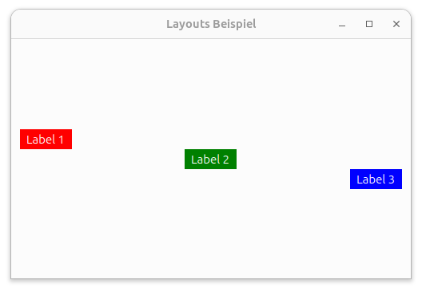
layoutalignmentsint main(int argc, char *argv[]) {
QApplication app(argc, argv); QWidget window;
window.setWindowTitle("Layouts"); window.setGeometry(100, 100, 500, 300);
QVBoxLayout *layout = new QVBoxLayout(&window);
QLabel *label1 = new QLabel("Label 1");
label1->setStyleSheet("color: white; padding: 4px; background-color: red;");
QLabel *label2 = new QLabel("Label 2");
label2->setStyleSheet("color: white; padding: 4px; background-color: green;");
QLabel *label3 = new QLabel("Label 3");
label3->setStyleSheet("color: white; padding: 4px; background-color: blue;");
layout->setSpacing(0);
layout->addStretch(); // Expander/Platzschlucker oben
layout->addWidget(label1, 0, Qt::AlignLeft);
layout->addWidget(label2, 0, Qt::AlignHCenter);
layout->addWidget(label3, 0, Qt::AlignRight);
layout->addStretch(); // Expander/Platzschlucker unten
window.show(); return app.exec();
}HBox und VBox können auch ineinander verschachtelt werden um komplexere Layouts zu erstellen.
Beispiel: Labels wachsen vertikal, darüber eine horizontale Box mit Buttons die nicht wächst.
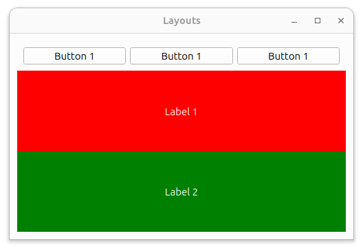
- Branch:layoutsnested`
int main(int argc, char *argv[]) {
QApplication app(argc, argv); QWidget window;
window.setWindowTitle("Layouts"); window.setGeometry(100, 100, 500, 300);
auto mainLayout = new QVBoxLayout(&window);
auto topRow = new QWidget(&window); // Container für die Buttons
auto topRowLayout = new QHBoxLayout(topRow); // Layout für den Button Container
auto button1 = new QPushButton("Button 1");
auto button2 = new QPushButton("Button 1");
auto button3 = new QPushButton("Button 1");
topRowLayout->addWidget(button1);
topRowLayout->addWidget(button2);
topRowLayout->addWidget(button3);
auto label1 = new QLabel("Label 1");
label1->setStyleSheet("color: white; padding: 4px; background-color: red;");
label1->setAlignment(Qt::AlignCenter);
auto label2 = new QLabel("Label 2");
label2->setStyleSheet("color: white; padding: 4px; background-color: green;");
label2->setAlignment(Qt::AlignCenter);
mainLayout->setSpacing(0);
mainLayout->addWidget(topRow); // Kein Wachsen
mainLayout->addWidget(label1, 1, Qt::Alignment()); // 1 = Expanding
mainLayout->addWidget(label2, 1, Qt::Alignment());
window.show(); return app.exec();
}R"(...)" definiert
werden.// Beispiel für Custom Widget Styling
widget->setStyleSheet(R"(
QWidget {
background-color: #f0f0f0;
border: 1px solid #cccccc;
border-radius: 4px;
}
QWidget:hover {
background-color: #e0e0e0;
border-color: #999999;
}
)");Splitter sind keine Layouts, aber sie können verwendet werden, um Bereiche zu teilen und die Größe der Bereiche zu ändern.
Splitter sollten IMMER(!) verwendet werden, wenn es eine Aufteilung in Bereiche gibt.
Beispiel: Splitter mit 2 Labels
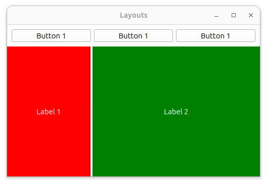
layoutsplitterint main(int argc, char *argv[]) {
QApplication app(argc, argv); QWidget window;
window.setWindowTitle("Layouts"); window.setGeometry(100, 100, 500, 300);
auto mainLayout = new QVBoxLayout(&window);
auto topRow = new QWidget(&window);
auto topRowLayout = new QHBoxLayout(topRow);
auto button1 = new QPushButton("Button 1");
auto button2 = new QPushButton("Button 1");
auto button3 = new QPushButton("Button 1");
topRowLayout->addWidget(button1);
topRowLayout->addWidget(button2);
topRowLayout->addWidget(button3);
auto splitter = new QSplitter(&window);
auto label1 = new QLabel("Label 1");
label1->setStyleSheet("color: white; padding: 4px; background-color: red;");
label1->setAlignment(Qt::AlignCenter);
auto label2 = new QLabel("Label 2");
label2->setStyleSheet("color: white; padding: 4px; background-color: green;");
label2->setAlignment(Qt::AlignCenter);
splitter->addWidget(label1);
splitter->addWidget(label2);
splitter->setSizes(QList<int>{ 100, 200 }); // initiale Verteilung beim Splitter
mainLayout->setSpacing(0);
mainLayout->addWidget(topRow);
mainLayout->addWidget(splitter, 1);
mainLayout->setContentsMargins(QMargins(0, 0, 0, 0)); // keine Innenabstände
window.show(); return app.exec();
}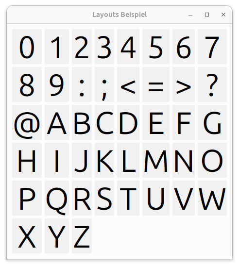
gridlayout#include <QApplication>
#include <QWidget>
#include <QLabel>
#include <QString>
#include <QGridLayout>
#include <memory>
using namespace std;
int main(int argc, char *argv[])
{
QApplication app(argc, argv);
auto window = make_unique<QWidget>(); // QWidget* als smart-pointer
window->setWindowTitle("Layouts Beispiel");
window->move(100, 100);
const auto PER_ROW = 8;
auto layout = new QGridLayout(window.get());
for (int c = '0', i = 0; c <= 'Z'; c++, i++) {
auto text = QString("%1").arg(QChar((c)));
auto label = new QLabel(text, window.get());
label->setAlignment(Qt::AlignCenter); // Text-Alignment im Label
label->setStyleSheet("background-color: #f1f1f1; font-size: 64px;");
label->setContentsMargins(QMargins(16, 16, 16, 16));
auto row = i / PER_ROW;
auto column = i % PER_ROW;
layout->addWidget(label, row, column);
}
window->show();
return app.exec();
}Die Basisklasse für alle Widgets in Qt ist QWidget.
Qt spricht von Widgets, wenn es um die Benutzeroberfläche geht und nicht
von Controls.
Die wichtigsten Widgets sind:
QWidget - Die Basisklasse für alle Widgets und ein
Container für Layouts
QLabel - Zeigt Text oder Bilder an
QPushButton - Ein Button, der auf Klicks
reagiert
QCheckBox - Ein Kontrollkästchen, das ein- oder
ausgeschaltet werden kann
QRadioButton - Ein Optionsfeld, das aus einer Gruppe
von Optionen ausgewählt werden kann
QComboBox - Ein Dropdown-Menü, das eine Liste von
Optionen anzeigt
QLineEdit - Ein Textfeld, in dem der Benutzer Text
eingeben kann
QTextEdit - Ein Textfeld, in dem der Benutzer
mehrzeiligen Text eingeben kann
QSlider - Ein Schieberegler, der einen Wert zwischen
einem Minimum und einem Maximum auswählt
QProgressBar - Eine Fortschrittsanzeige, die den
Fortschritt einer Aufgabe anzeigt
QSpinBox - Ein Eingabefeld, das einen numerischen
Wert auswählt
QDial - Ein Drehknopf, der einen Wert zwischen einem
Minimum und einem Maximum auswählt
QCalendarWidget - Ein Kalender, der ein Datum
auswählt
QTimeEdit - Ein Eingabefeld, das eine Uhrzeit
auswählt
QDateEdit - Ein Eingabefeld, das ein Datum
auswählt
QDateTimeEdit - Ein Eingabefeld, das ein Datum und
eine Uhrzeit auswählt
QCalendarWidget - Ein Kalender, der ein Datum
auswählt
QSplitter - Ein Widget, das andere Widgets
horizontal oder vertikal aufteilt
QFontComboBox - Ein Dropdown-Menü, das eine Liste
von Schriftarten anzeigt
QListWidget - Eine Liste von Elementen, die
ausgewählt werden können
QTreeWidget - Eine hierarchische Liste von
Elementen, die ausgewählt werden können
QTableWidget - Eine Tabelle von Elementen, die
ausgewählt werden können
QListVew - Eine Liste von Elementen, die ausgewählt
werden können
QTreeView - Eine hierarchische Liste von Elementen,
die ausgewählt werden können
QTableView - Eine Tabelle von Elementen, die
ausgewählt werden können
QTextBrowser - Ein Textfeld, das HTML-Text anzeigt,
aber nicht bearbeitet werden kann. unterstützt Richtext, Links und
Bilder
QWebEngineView - Ein Widget, das Webseiten anzeigt
und interaktive Webinhalte unterstützt
Alle Widgets können aktiv und inaktiv sein sowie sichtbar und unsichtbar sein.
Alle Widgets haben eine Position und eine Größe.
Alle Widgets haben optional einen Cursor
Alle Widgets haben optional eine Schriftart und einen optionalen ToolTip
Widgets können mit Stylesheets gestyled werden. Stylesheets sind eine CSS-ähnliche Syntax, die von Qt unterstützt wird. Stylesheets können auf Widgets, Layouts und sogar auf die gesamte Anwendung angewendet werden.
QLabel unterstützt: - Qt-HTML Formatierung - Qt Stylesheets - Qt Rich Text - Selektion von Text - Bilder (in Form von QPixmap)
Beispiel: Label-Variante mit Bild und Stylesheet
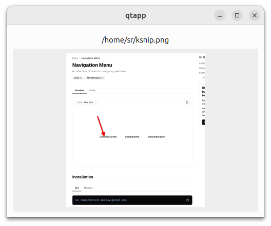
qlabelint main(int argc, char *argv[]) {
QApplication app(argc, argv);
QWidget window; window.setGeometry(100, 100, 500, 300);
if (argc != 2) {
QMessageBox::critical(&window, "Falscher Aufruf", "Aufruf mit Bild als erster Parameter");
QApplication::exit(1);
}
QByteArray data;
{
QFile f(argv[1]);
if (!f.exists() || !f.fileName().toLower().endsWith("png")) {
QMessageBox::critical(&window, "Falscher Aufruf", "png file muss beim Start angegeben werden.");
QApplication::exit(1);
}
f.open(QFile::ReadOnly);
data = f.readAll();
}
auto mainLayout = new QVBoxLayout(&window);
mainLayout->setSpacing(0);
auto headerArea = new QWidget(&window);
auto headerAreaLayout = new QHBoxLayout(headerArea);
auto pathLabel = new QLabel(argv[1]);
pathLabel->setStyleSheet("font-style: bold;");
pathLabel->setTextInteractionFlags(Qt::TextSelectableByMouse); // selektierbar
headerAreaLayout->addWidget(pathLabel, 0, Qt::AlignCenter);
auto imageArea = new QWidget(&window);
auto imageAreaLayout = new QHBoxLayout(imageArea);
auto imageLabel = new QLabel();
QPixmap pixmap;
pixmap.loadFromData(data);
if (pixmap.height() > 300) pixmap = pixmap.scaledToHeight(300, Qt::SmoothTransformation);
imageLabel->setPixmap(pixmap);
imageArea->setStyleSheet("background-color: #eeeeee;");
imageAreaLayout->addWidget(imageLabel, 1, Qt::AlignCenter);
mainLayout->addWidget(headerArea, 0);
mainLayout->addWidget(imageArea, 1); // stretch
window.show(); return app.exec();
}QStyle::StandardPixmap referenziert werden können.auto warningIcon = QApplication::style()->standardIcon(QStyle::SP_MessageBoxWarning);
button->setIcon(warningIcon);QCheckBox kann ebenfalls mit Stylesheets gestyled werden und auch die Icons von QPushButton verwenden.
QComboBox ist ein Dropdown-Menü, das eine Liste von Optionen
anzeigt. Die Optionen können mit addItem() hinzugefügt
werden. Die aktuelle Auswahl kann mit currentIndex() oder
currentText() abgefragt werden. Das Signal
currentIndexChanged() wird ausgesendet, wenn sich die
Auswahl ändert.
QComboBox kann auch mit Stylesheets gestyled werden. QComboBox kann auch editierbar sein, d.h. der Benutzer kann eigene Werte eingeben. Strenggenommen sind nicht editierbare QComboBoxes keine Comboboxes, sondern Dropdown-Menüs oder SelectBoxes.
QComboBox wird mit Items initialisert die ein Label für die
Darstellung einen einen Wert vom Typ QVariant haben. Die Items können
auch mit setItemData() mit zusätzlichen Daten versehen
werden.
Beispiel: Buttons, Checkbox und Combobox
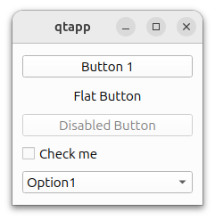
buttonsint main(int argc, char *argv[]) {
QApplication app(argc, argv);
QWidget window; window.move(100, 100);
auto layout = new QVBoxLayout(&window);
auto button1 = new QPushButton("Button 1", &window);
layout->addWidget(button1);
auto button2 = new QPushButton("Flat Button", &window);
button2->setFlat(true);
layout->addWidget(button2);
auto button3 = new QPushButton("Disabled Button", &window);
button3->setDisabled(true);
layout->addWidget(button3);
auto checkbox = new QCheckBox("Check me", &window);
QObject::connect(checkbox, &QCheckBox::checkStateChanged, &window, [checkbox] {
qDebug() << "checkbox changed: " << checkbox->checkState();
});
layout->addWidget(checkbox);
auto combobox = new QComboBox(&window);
combobox->setEditable(false);
combobox->addItem("Option1", 1);
combobox->addItem("Option2", 2);
combobox->addItem("Option3", QVariant::fromValue(3));
QObject::connect(combobox, &QComboBox::currentIndexChanged, &window, [combobox] {
qDebug() << "combobox changed: " << combobox->currentIndex() << combobox->currentData();
});
layout->addWidget(combobox);
window.show(); return app.exec();
}QTextInput ist ein einfaches Textfeld, in dem der Benutzer Text
eingeben kann. Das Signal textChanged() wird ausgesendet,
wenn sich der Text ändert.
Achtung: es gibt ebenfalls textEdited() und
editingFinished() Signale, die in bestimmten Fällen besser
geeignet sind. textEdited() wird nur ausgesendet, wenn der
Benutzer den Text interaktiv ändert (also nicht bei Änderungen durch
Methodenaufrufe) und editingFinished() wird ausgesendet,
wenn der Benutzer die Eingabe beendet. (Durck auf Enter oder Verlassen
des Feldes)
Masked Input: QTextInput kann auch Masken verwenden, um die Eingabe zu beschränken. Masken sind eine Art von Formatierung, die die Eingabe von Text einschränken. Masken können z.B. für IBANs, Telefonnummern, Postleitzahlen oder Datumsangaben verwendet werden.
Die Maske “AA99 9999 9999 9999 9999 9999 999” erlaubt z.B. nur Großbuchstaben und Zahlen an bestimmten Positionen.
Beispiel: TextInput, Masked Input, DateInput
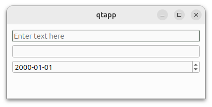
int main(int argc, char *argv[])
{
QApplication app(argc, argv);
QWidget window;
window.resize(400, 150); window.move(100, 100);
auto layout = new QVBoxLayout(&window);
// Text input
auto textInput = new QLineEdit(&window);
textInput->setPlaceholderText("Enter text here");
layout->addWidget(textInput);
QObject::connect(textInput, &QLineEdit::textChanged, &window, [textInput] {
qDebug() << "textchanged=" << textInput->text();
});
// Masked input for IBAN
auto maskedInput = new QLineEdit(&window);
maskedInput->setInputMask("AA99 9999 9999 9999 9999 9999 999");
maskedInput->setPlaceholderText("Enter IBAN");
layout->addWidget(maskedInput);
// Date input
auto dateInput = new QDateEdit(&window);
dateInput->setDisplayFormat("yyyy-MM-dd");
layout->addWidget(dateInput);
layout->addStretch(1);
window.show();
return app.exec();
}Es gibt jeweils 2 Arten von Widgets für Tabellen, Listen und Bäume:
Die Modelbasierten Widgets funktionieren mit einer Model-Klasse welche die Daten bereitstellt. Es gibt Standard-Modelklassen wie QStandardItemModel, QAbstractItemModel und QAbstractTableModel. Insbesondere die Basis-Klasse QAbstractItemModel ist sehr mächtig und kann für eigene Modelklassen abgeleitet werden.
Die Direkten Widgets sind einfacher zu verwenden und haben bereits eine Standard-Implementierung des Models. Die Direkten Widgets sind für einfache Anwendungen und Prototypen geeignet. Wenn die Datenmenge allerdings groß ist oder die Daten dynamisch sind, dann sollte man unbedingt die Modelbasierten Widgets verwenden.
Beispiel: QTableWidget
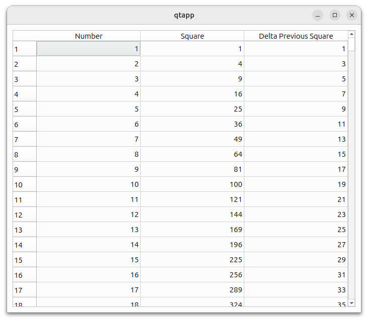
tablewidgetint main(int argc, char *argv[])
{
QApplication app(argc, argv);
QWidget window;
window.resize(300, 200);
window.move(100, 100);
auto layout = new QVBoxLayout(&window);
const int N_ROWS = 10000;
auto table = new QTableWidget(N_ROWS, 3, &window);
table->setHorizontalHeaderLabels({"Number", "Square", "Delta Previous Square"});
for (auto i = 0; i < N_ROWS; ++i) {
auto number = i + 1;
auto square = number * number;
auto previousSquare = (number - 1) * (number - 1);
auto item1 = new QTableWidgetItem(QString::number(number));
item1->setTextAlignment(Qt::AlignRight | Qt::AlignVCenter);
auto item2 = new QTableWidgetItem(QString::number(square));
item2->setTextAlignment(Qt::AlignRight | Qt::AlignVCenter);
auto item3 = new QTableWidgetItem(QString::number(square - previousSquare));
item3->setTextAlignment(Qt::AlignRight | Qt::AlignVCenter);
table->setItem(i, 0, item1);
table->setItem(i, 1, item2);
table->setItem(i, 2, item3);
}
table->horizontalHeader()->setSectionResizeMode(0, QHeaderView::Stretch);
table->horizontalHeader()->setSectionResizeMode(1, QHeaderView::Stretch);
table->horizontalHeader()->setSectionResizeMode(2, QHeaderView::Stretch);
layout->addWidget(table, 1);
window.show();
return app.exec();
}tableview1int main(int argc, char *argv[])
{
QApplication app(argc, argv);
QWidget window;
window.resize(300, 200);
window.move(100, 100);
auto layout = new QVBoxLayout(&window);
const int N_ROWS = 10000;
auto model = new QStandardItemModel(N_ROWS, 3, &window);
model->setHorizontalHeaderLabels({"Number", "Square", "Delta Previous Square"});
for (auto i = 0; i < N_ROWS; ++i) {
auto number = i + 1;
auto square = number * number;
auto previousSquare = (number - 1) * (number - 1);
auto item1 = new QStandardItem(QString::number(number));
item1->setTextAlignment(Qt::AlignRight | Qt::AlignVCenter);
auto item2 = new QStandardItem(QString::number(square));
item2->setTextAlignment(Qt::AlignRight | Qt::AlignVCenter);
auto item3 = new QStandardItem(QString::number(square - previousSquare));
item3->setTextAlignment(Qt::AlignRight | Qt::AlignVCenter);
model->setItem(i, 0, item1);
model->setItem(i, 1, item2);
model->setItem(i, 2, item3);
}
auto tableView = new QTableView(&window);
tableView->setModel(model);
tableView->horizontalHeader()->setSectionResizeMode(0, QHeaderView::Stretch);
tableView->horizontalHeader()->setSectionResizeMode(1, QHeaderView::Stretch);
tableView->horizontalHeader()->setSectionResizeMode(2, QHeaderView::Stretch);
layout->addWidget(tableView, 1);
window.show();
return app.exec();
}Die Benutzung von Modelklassen ist sehr mächtig. Die Modelklasse QStandardItemModel ist eine einfache Implementierung eines Models, die für viele Anwendungsfälle ausreicht und einem direkten Widget vorzuziehen ist. Um die volle Mächtigkeit von Qt zu nutzen, sollte man jedoch seine Modellklassen von QAbstractItemModel ableiten oder komplett eigene Modelklassen implementieren.
Branch: tableview2
// model.h
class CustomTableModel : public QAbstractTableModel {
Q_OBJECT
public:
CustomTableModel(QObject *parent = nullptr) : QAbstractTableModel(parent) {}
int rowCount(const QModelIndex &parent = QModelIndex()) const override { return N_ROWS;}
int columnCount(const QModelIndex &parent = QModelIndex()) const override { return 3; }
QVariant data(const QModelIndex &index, int role = Qt::DisplayRole) const override {
if (!index.isValid() || role != Qt::DisplayRole) return QVariant();
int row = index.row();
int col = index.column();
int number = row + 1;
int square = number * number;
int previousSquare = (number - 1) * (number - 1);
switch (col) {
case 0: return QString::number(number);
case 1: return QString::number(square);
case 2: return QString::number(square - previousSquare);
default: return QVariant();
}
}
QVariant headerData(int section, Qt::Orientation orientation, int role = Qt::DisplayRole) const override {
if (role != Qt::DisplayRole) return QVariant();
if (orientation == Qt::Horizontal) {
switch (section) {
case 0: return QString("Number");
case 1: return QString("Square");
case 2: return QString("Delta Previous Square");
default: return QVariant();
}
}
return QVariant();
}
private:
static const int N_ROWS = 1E6; // 1 million rows
};// main.cpp
int main(int argc, char *argv[])
{
QApplication app(argc, argv);
QWidget window;
window.resize(300, 200);
window.move(100, 100);
auto layout = new QVBoxLayout(&window);
auto model = new CustomTableModel(&window);
auto tableView = new QTableView(&window);
tableView->setModel(model);
tableView->horizontalHeader()->setSectionResizeMode(0, QHeaderView::Stretch);
tableView->horizontalHeader()->setSectionResizeMode(1, QHeaderView::Stretch);
tableView->horizontalHeader()->setSectionResizeMode(2, QHeaderView::Stretch);
layout->addWidget(tableView, 1);
window.show();
return app.exec();
}Qt bringt eine Reihe von vordefinierten Dialogen mit, die über
die Klasse QMessageBox aufgerufen werden können. Die
wichtigsten Dialoge sind:
QMessageBox::information()QMessageBox::warning()QMessageBox::critical()QMessageBox::question()Die Dialoge können mit einem Titel und einer Nachricht angezeigt
werden. Die interaktiven Dialoge (Frage, Warnung, Fehler) geben
zusätzlich einen Wert des Typs QMessageBox::StandardButton
zurück, der vom Benutzer ausgewählt wurde.
Branch: simpledialogs
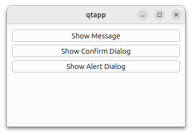
int main(int argc, char *argv[]) {
QApplication app(argc, argv);
QWidget window; window.move(100, 100);
auto layout = new QVBoxLayout(&window);
// Show Message Button
auto b1 = new QPushButton("Show Message", &window);
QObject::connect(b1, &QPushButton::clicked, [&](){
QMessageBox::information(&window, "Message", "This is a simple message.");
});
layout->addWidget(b1);
// Show Confirm Dialog Button
auto b2 = new QPushButton("Show Confirm Dialog", &window);
QObject::connect(b2, &QPushButton::clicked, [&](){
QMessageBox::StandardButton reply;
reply = QMessageBox::question(
&window, "Confirm", "Are you sure you want to proceed?", QMessageBox::Yes|QMessageBox::No);
if (reply == QMessageBox::Yes)
QMessageBox::information(&window, "Confirmed", "You chose Yes.");
else
QMessageBox::information(&window, "Cancelled", "You chose No.");
});
layout->addWidget(b2);
// Show Alert Dialog Button
auto b3 = new QPushButton("Show Alert Dialog", &window);
QObject::connect(b3, &QPushButton::clicked, [&](){
QMessageBox::warning(&window, "Alert", "This is an alert message.");
});
layout->addWidget(b3);
layout->addStretch();
window.show();
return app.exec();
}Dialog Widgets sind spezielle Widgets, die als Popup-Fenster
angezeigt werden und die Interaktion mit dem Benutzer ermöglichen.
Dialog Widgets sind normalerweise Subklassen von QDialog
oder QDialogButtonBox.
Dialoge die mit dem Designer erstellt wurden, sind normalerweise
Subklassen von QDialog. Dialoge die mit dem Designer
erstellt wurden, haben bereits eine Standard-Implementierung von
QDialogButtonBox und können mit
QDialogButtonBox::standardButtons() die Standard-Buttons
abfragen.
Dialoge können mit exec() oder open()
geöffnet werden. exec() ist ein synchroner Aufruf, d.h. der
Aufruf blockiert bis der Dialog geschlossen wird. open()
ist ein asynchroner Aufruf, d.h. der Aufruf blockiert nicht und der
Dialog wird asynchron geöffnet.
Im Designer einen Dialog mit einer Implementierungsklasse erstellen und dann den Dialog aus dem Code heraus anzeigen.
Branch: desigerdialog
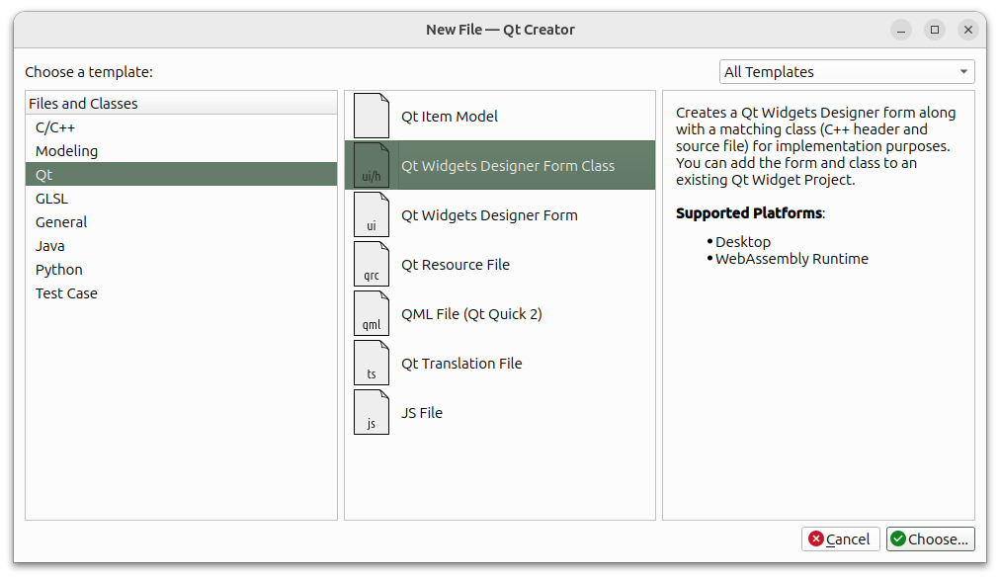
int main(int argc, char *argv[])
{
QApplication app(argc, argv);
QWidget window;
window.move(100, 100);
auto layout = new QVBoxLayout(&window);
auto button = new QPushButton("Show Dialog from Designer", &window);
layout->addWidget(button);
QObject::connect(button, &QPushButton::clicked, [button]{
MyDesignerDialog dialog(button);
dialog.exec();
});
window.show();
return app.exec();
}Widgets liefern Signale wenn bestimmte Ereignisse eintreten.
clicked() oder pressed()textChanged()valueChanged()stateChanged()toggled()currentIndexChanged()dateChanged()triggered()triggered()Diese Ereignisse können mit Slots verbunden werden oder direkt mit einer Lambda-Funktion verknüpft werden.
Beispiel: QPushButton mit Lambda-Funktion. Branch
lambdasignals
int main(int argc, char *argv[]) {
QApplication app(argc, argv); QWidget window;
window.setWindowTitle("Slots"); window.setGeometry(100, 100, 500, 300);
auto mainLayout = new QVBoxLayout(&window);
auto button = new QPushButton("Button");
button->setSizePolicy(QSizePolicy(QSizePolicy::Fixed, QSizePolicy::Fixed));
mainLayout->addWidget(button,0, Qt::AlignHCenter);
QObject::connect(button, &QPushButton::clicked, [&]() {
qDebug() << "Button wurde geklickt";
});
window.show(); return app.exec();
}Slots werden dann typsischerweise in eigenen Widgets oder Subklassen von QWidget implementiert.
Beispiel: QPushButton mit eigener Klasse. Branch
slotbutton
webengineint main(int argc, char *argv[]) {
QApplication app(argc, argv);
QObject::connect(&app, &QApplication::lastWindowClosed, [] { QApplication::quit(); });
QWidget window;
window.setWindowTitle("Webview"); window.setGeometry(50, 100, 950, 800);
auto layout = new QVBoxLayout(&window);
auto webView = new QWebEngineView(&window);
auto output = new QLabel(&window);
auto toolbar = new QWidget(&window);
auto toolbarLayout = new QHBoxLayout(toolbar);
auto makebutton = [=] (const QString &t) {
auto b = new QPushButton(t, toolbar);
b->setSizePolicy(QSizePolicy(QSizePolicy::Fixed, QSizePolicy::Fixed));
toolbarLayout->addWidget(b);
return b;
};
auto makeurlbutton = [=] (const QString &t, const QString &url) {
auto button = makebutton(t);
QObject::connect(button, &QPushButton::clicked, button, [=]() { webView->setUrl(QUrl(url)); });
};
makeurlbutton("Memory", "https://srutz.github.io/vuememory/");
makeurlbutton("Solitaire", "https://srutz.github.io/vuesolitaire/");
makeurlbutton("GFU", "https://www.gfu.net/seminare.html");
QObject::connect(makebutton("Say hi from Javascript"), &QPushButton::clicked, &window, [=]() {
webView->page()->runJavaScript("alert('Hello from Qt');");
});
QObject::connect(makebutton("Call JS-Function"), &QPushButton::clicked, &window, [=]() {
webView->page()->runJavaScript("Math.pow(2, 10)", [=] (auto result) {
output->setText(QString("The result is %1").arg(result.toDouble()));
QTimer::singleShot(5000, [=]() {output->setText(""); });
});
});
toolbarLayout->addStretch(1);
layout->addWidget(toolbar); layout->addWidget(webView, 1); layout->addWidget(output);
QTimer::singleShot(1, [=]() { webView->setUrl(QUrl("https://srutz.github.io/vuesolitaire/")); });
window.show(); return app.exec();
}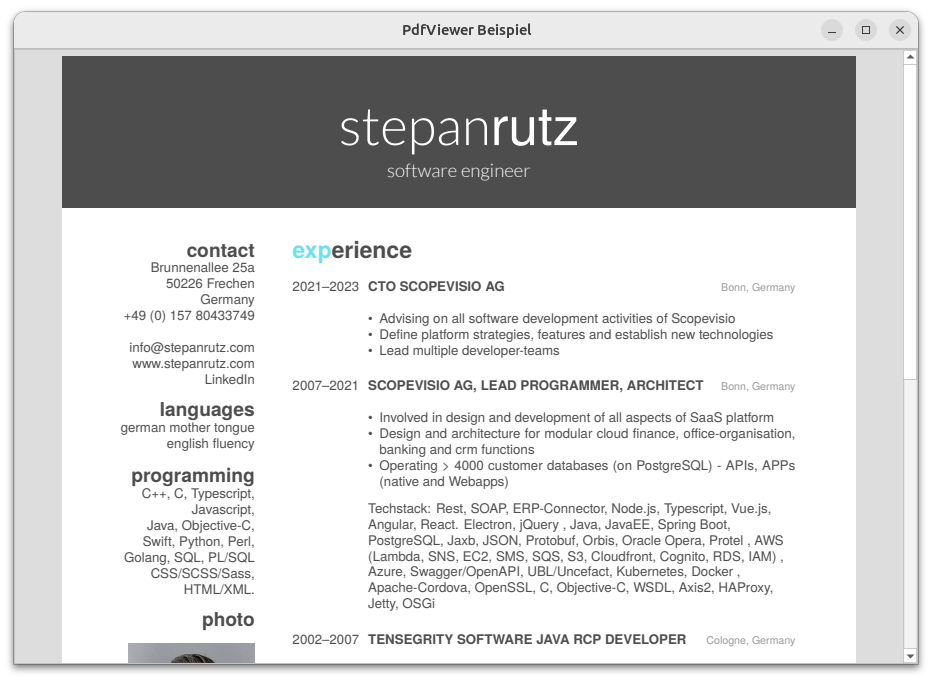
pdfviewint main(int argc, char *argv[]) {
QApplication app(argc, argv);
QObject::connect(&app, &QApplication::lastWindowClosed, [] { QApplication::quit(); });
QWidget window;
window.setWindowTitle("PdfViewer Beispiel");
window.setGeometry(100, 100, 900, 600);
auto layout = new QVBoxLayout(&window);
QString filePath;
if (argc == 2) {
filePath = QString(argv[1]);
} else {
QString documentsPath = QStandardPaths::writableLocation(QStandardPaths::DocumentsLocation);
QDir documentsDir(documentsPath);
filePath = documentsDir.filePath("cv.pdf");
}
auto viewer = new QPdfView(&window);
auto *document = new QPdfDocument(&window);
document->load(filePath);
viewer->setDocument(document);
layout->setContentsMargins(QMargins(0, 0, 0, 0));
layout->addWidget(viewer);
window.show();
return app.exec();
}QtSql enthalten.sqlint main(int argc, char *argv[]) {
QApplication app(argc, argv);
QWidget window;
window.setWindowTitle("Sql Beispiel");
window.setGeometry(100, 100, 600, 500);
auto layout = new QVBoxLayout(&window);
auto output = new QPlainTextEdit();
output->setReadOnly(true);
layout->addWidget(output);
auto db = QSqlDatabase::addDatabase("QPSQL"); // QPSQL für PostgreSQL
db.setHostName("localhost");
db.setPort(5432); db.setDatabaseName("template1");
db.setUserName("sr"); db.setPassword("123");
if (!db.open()) {
qDebug() << "Failed to connect to the database:" << db.lastError().text();
return EXIT_FAILURE;
}
QString s; QSqlQuery query;
QString sql = R"(SELECT table_schema, table_name FROM information_schema.tables order by 1, 2)";
if (!query.exec(sql)) {
qDebug() << "Failed to execute query:" << query.lastError().text();
return EXIT_FAILURE;
}
while (query.next()) {
auto tableSchema = query.value("table_schema").toString(); //QVariant
auto tableName = query.value("table_name").toString();
s += tableSchema + "." + tableName + "\r\n";
}
db.close();
output->setPlainText(s);
window.show();
return app.exec();
}Qt bietet Klassen zur Netzwerkprogrammierung.
Alternative können libcurl oder andere C++ Netzwerklibraries verwendet werden.
Nebenläufigkeit kann über QThreadund Signale in Qt
sehr gut und sehr leicht programmiert werden.
Ein Pseudo-Linerares Programmiermodell mit Continuations wie in C# oder Javascript ist in C++ 17 noch nicht möglich. (Siehe async/await in C# und Javascript).
In C++ 20 gibt es Co-Routinen, die in der Lage sind, asynchrone Funktionen zu schreiben, die wie synchrone Funktionen aussehen. (Siehe auch: C++20: std::range, new literals, co-routines (async/await))
Alternative zu QNetworkAccessManager: libcurl
Siehe: https://curl.se/libcurl/ und Libcurl mit Qt
class HttpClient : public QObject {
Q_OBJECT
private:
QNetworkAccessManager* m_manager;
public:
explicit HttpClient(QObject* parent = nullptr) : QObject(parent) {
m_manager = new QNetworkAccessManager(this);
}
void get(const QString& url) {
QNetworkRequest request(url);
request.setHeader(QNetworkRequest::UserAgentHeader, "MyApp/1.0");
QNetworkReply* reply = m_manager->get(request);
connect(reply, &QNetworkReply::finished,
this, [this, reply]() {
if (reply->error() == QNetworkReply::NoError) {
emit dataReceived(reply->readAll());
} else {
emit errorOccurred(reply->errorString());
}
reply->deleteLater();
});
}
signals:
void dataReceived(const QByteArray& data);
void errorOccurred(const QString& error);
};/* jsonfetcher.h Generic JSON Fetcher */
class JsonFetcher : public QObject
{
Q_OBJECT
struct FetchOptions {
QString url;
std::optional<QString> httpMethod; // POST, GET, DELETE, PUT etc
std::optional<QByteArray> data; // POST / PUT upload-data
};
public:
explicit JsonFetcher(QObject *parent = nullptr);
void fetch(const FetchOptions &options);
signals:
void responseReceived(const QJsonDocument &document);
void error(const QString &message);
private slots:
void handleNetworkResponse(QNetworkReply *reply);
private:
QNetworkAccessManager *manager;
};// jsonfetcher.cpp
JsonFetcher::JsonFetcher(QObject *parent)
: QObject(parent)
, manager(new QNetworkAccessManager(this)) {
connect(manager, &QNetworkAccessManager::finished,
this, &JsonFetcher::handleNetworkResponse);
}
void JsonFetcher::fetch(const FetchOptions &options) {
QUrl url(options.url);
if (!url.isValid()) {
emit error("Invalid URL");
return;
}
QNetworkRequest request(url);
qDebug() << "Fetching URL:" << url.toString();
request.setRawHeader("Accept", "application/json");
if (options.httpMethod.value_or("GET") == "POST") {
request.setHeader(QNetworkRequest::ContentTypeHeader, "application/json");
manager->post(request, options.data.value_or(QByteArray()));
} else {
manager->get(request);
}
}
void JsonFetcher::handleNetworkResponse(QNetworkReply *reply) {
qDebug() << "network request finished 2";
/* make sure reply is deleted under all circumstances */
RAIIGuard guard([reply] { reply->deleteLater(); });
qDebug() << "handle json response";
if (reply->error() != QNetworkReply::NoError) {
emit error(reply->errorString());
return;
}
auto data = reply->readAll();
qDebug() << "got data" << data.size() << "bytes" << ": utf8=" << QString::fromUtf8(data);
auto doc = QJsonDocument::fromJson(data);
if (doc.isNull()) {
emit error("Failed to parse JSON");
return;
}
emit responseReceived(doc);
}class HttpClient {
public:
HttpClient() {
curl_global_init(CURL_GLOBAL_ALL);
m_curl = curl_easy_init();
}
~HttpClient() {
curl_easy_cleanup(m_curl);
curl_global_cleanup();
}
void get(const std::string& url) {
curl_easy_setopt(m_curl, CURLOPT_URL, url.c_str());
curl_easy_setopt(m_curl, CURLOPT_WRITEFUNCTION, writeCallback);
curl_easy_setopt(m_curl, CURLOPT_WRITEDATA, &m_data);
curl_easy_perform(m_curl);
}
std::string data() const {
return m_data;
}
private:
CURL* m_curl;
std::string m_data;
static size_t writeCallback(char* ptr, size_t size, size_t nmemb, std::string* data) {
data->append(ptr, size * nmemb);
return size * nmemb;
}
};#ifndef MYPLUGININTERFACE_H
#define MYPLUGININTERFACE_H
#include <QtPlugin>
// Define an interface with at least one pure virtual function
class MyPluginInterface
{
public:
virtual ~MyPluginInterface() {}
virtual QString pluginName() const = 0;
virtual QString customFunction1(const QString &input) = 0;
};
// Export the interface for use in plugins
#define MyPluginInterface_iid "com.example.MyPluginInterface"
Q_DECLARE_INTERFACE(MyPluginInterface, MyPluginInterface_iid)
#endif // MYPLUGININTERFACE_H#include "MyPluginInterface.h"
#include <QObject>
class MyPlugin : public QObject, public MyPluginInterface
{
Q_OBJECT
Q_PLUGIN_METADATA(IID MyPluginInterface_iid)
Q_INTERFACES(MyPluginInterface)
public:
QString pluginName() const override {
return "Example Plugin";
}
QString customFunction1(const QString &input) override {
return processInput(input);
}
};#include <QPluginLoader>
#include <QDebug>
#include "MyPluginInterface.h"
int main(int argc, char *argv[])
{
QCoreApplication app(argc, argv);
QPluginLoader loader("path/to/plugin/libMyPlugin.so"); // Adjust the path
QObject *plugin = loader.instance();
if (plugin) {
MyPluginInterface *myPlugin = qobject_cast<MyPluginInterface *>(plugin);
if (myPlugin) {
qDebug() << "Loaded plugin:" << myPlugin->pluginName();
} else {
qDebug() << "Failed to cast plugin interface.";
}
} else {
qDebug() << "Failed to load plugin:" << loader.errorString();
}
return app.exec();
}Unter MacOS und Windows ist es notwendig, den Code zu signieren. Dazu gibt es unter Windows 2 Klassen von Code-Signing-Zertifikaten:
Unter MacOS bekommt man ein Code-Signing Zertifkat zusammen mit seinem Apple Developer Account. Dieser kostet 99 USD pro Jahr.
Unter Linux ist Code-Signing nicht notwendig, da es keine Zertifikate gibt, die von allen Distributionen akzeptiert werden.
Ohne Zertifikat können die Anwendungen nur unter der Umgehung der Sicherheitswarnungen installiert werden. Dies ist jedoch nicht empfehlenswert, da es das Vertrauen der Benutzer in die Anwendung verringert (oder zerstört).
Um den MacOS Appstore für die Veröffentlichung zu nutzen, muss man die Anwendung über XCode signieren und in den MacOS Appstore hochladen. Außerdem muss die Anwendung den MacOS Appstore-Richtlinien entsprechen.
Windeployqt ist ein Tool, um alle notwendigen DLLs und Bibliotheken in das Verzeichnis der Anwendung zu kopieren.
Anschließend kann man sehr einfach eine MSI-Datei erstellen, die die Anwendung und alle notwendigen Dateien enthält.